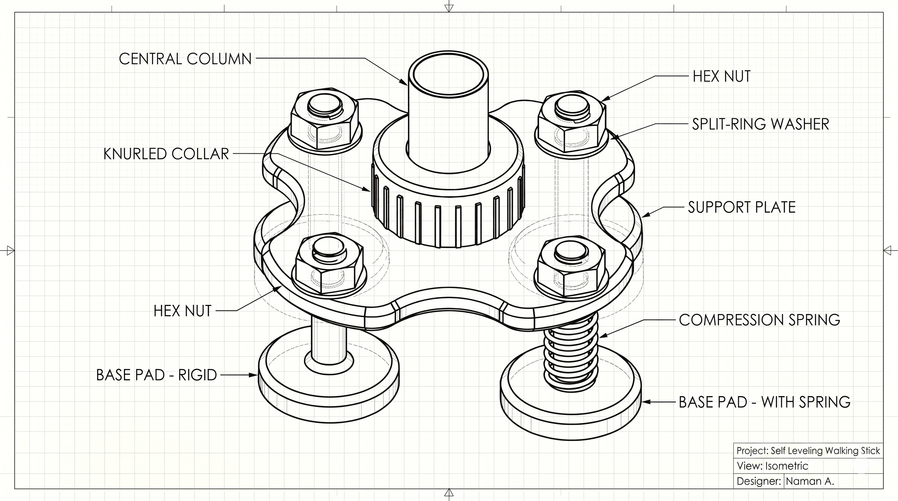

Hello, I'm
Naman Aggarwal
I am currently a Product Owner at IOSH, with a passion for building human-centred solutions . With a background spanning technical architecture and human-product interaction, I bridge the gap between complex engineering and intuitive design. My work focuses on creating scalable hardware and digital products while maintaining an unwavering commitment to craft and aesthetic minimalism.
Case Studies
Self Leveling
Walking Stick
Adapts to uneven terrain, providing enhanced stability and support.
App: 344542-001
Journal: 32/2021

Dukaanji
Successfully running an e-commerce business based in India.

DesigNerd
My 3D printing journey started in 2025 with a Bambu Lab A1 Mini.

DARPAN BY USHA
I designed and built the website for my family's boutique.

Projects & Hardware

Technical Pillars
Product & Delivery
- Jira
- Asana
- Agile/Scrum
- User Research
Data & Automation
- Power BI
- Power Automate
- Dynamics 365
- DAX
Design & AI Prototyping
- Figma
- Cursor
- Claude Code
- Copilot
Physical Hardware
- Mechanical CAD
- PLA 3D Printing
- DFM Strategy